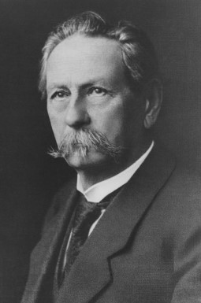

1.메르세데스-벤츠의 탄생 및 설립자
메르세데스-벤츠의 공동 설립자 중 한 명인 칼 벤츠는 1844년 독일 카를스루에(Karlsrue)에서 태어났다.
1846년 그의 아버지가 세상을 떠나고 살림이 어려운 상황에서도 칼 벤츠의 어머니는 아들을 그래머 스쿨(Grammar School, 당시 독일 중등학교)에 진학시키고 이후 기계공학을 공부할 수 있도록 지원을 아끼지 않았다.
1864년 카를스루에에 있는 공과대학을 졸업한 칼 벤츠는 1878년부터 자신이 목표로 했던 “말이 끌지 않는 자동차”를 만들기 위해 가스 구동 방식의 2행정 엔진(2-Stroke Engine) 개발에 매진했다.
칼 벤츠는 1879년 12월 31일, 최초의 휘발유 엔진(Gasoline Engine, 가솔린을 연료로 하는 엔진)을 개발하는 데 성공했으며, 1883년 10월 독일 만하임(Mannheim)에 세계 최초의 자동차 공장 ‘벤츠 앤 시에’를 설립했다.
1885년 2인승 마차를 이용해 0.75마력(Horse Power, 1마력은 1마리 말이 끄는 힘) 1기통 4행정 엔진(4- Stroke Engine)과 강철 파이프, 차동 장치 그리고 세 개의 와이어 스포크 휠(Spoke Wheel)이 장착된 움직이는 차를 만드는데 성공했고,
1886년에는 첫 번째 삼륜 자동차인 ‘페이턴트 모터바겐(Patent-Motorwagen, (영) Patent Motor Car)’을 탄생시켰다.
가솔린 엔진으로 움직이는 이 삼륜 자동차는 세계 최초로 ‘자동차’라는 이름으로 특허를 제출하여 독일제국 특허번호 DRP 37435를 획득했고, ‘페이턴트 모터바겐’이라는 이름은 우리말로 특허를 받은 자동차라는 의미이다.
1893년에는 앞바퀴를 여러 각도로 움직일 수 있는 ‘빅토리아(Viktoria, (영) Victoria)’를 개발하여 본격적으로 양산 체제에 돌입했다. 이후 벤츠 앤 시에는 1900년까지 매년 600대의 자동차를 생산했다.

메르세데스-벤츠의 설립자 칼 벤츠(1844~1929)